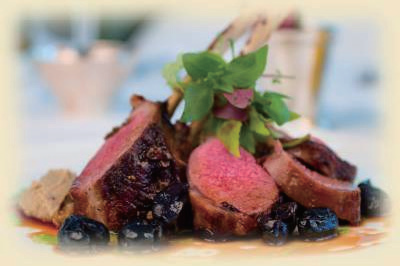
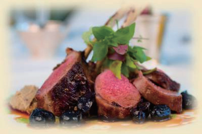

主菜
紧随副菜之后的是主菜，是西餐中最主要的一道菜。主菜通常都是一些肉类的菜肴，尤其是牛肉和牛排。其他常用的肉类品种包括羊肉、禽类、猪肉和贝壳类。
作为一餐中最重要也是最有影响力的一道菜，主菜代表着整个餐宴的风格和特色。因此，在一些特殊场合，比如传统节日，人们常常会根据传统习俗制作一些特定的主菜。拿感恩节来说。在北美，感恩节是一个重要的节日，通常也是一个家人、友人聚会，表达感激之情的好时机。传统感恩节大餐的的特色主菜是火鸡。
紧随副菜之后的是主菜，是西餐中最主要的一道菜。主菜通常都是一些肉类的菜肴，尤其是牛肉和牛排。其他常用的肉类品种包括羊肉、禽类、猪肉和贝壳类。
作为一餐中最重要也是最有影响力的一道菜，主菜代表着整个餐宴的风格和特色。因此，在一些特殊场合，比如传统节日，人们常常会根据传统习俗制作一些特定的主菜。拿感恩节来说。在北美，感恩节是一个重要的节日，通常也是一个家人、友人聚会，表达感激之情的好时机。传统感恩节大餐的的特色主菜是火鸡。
